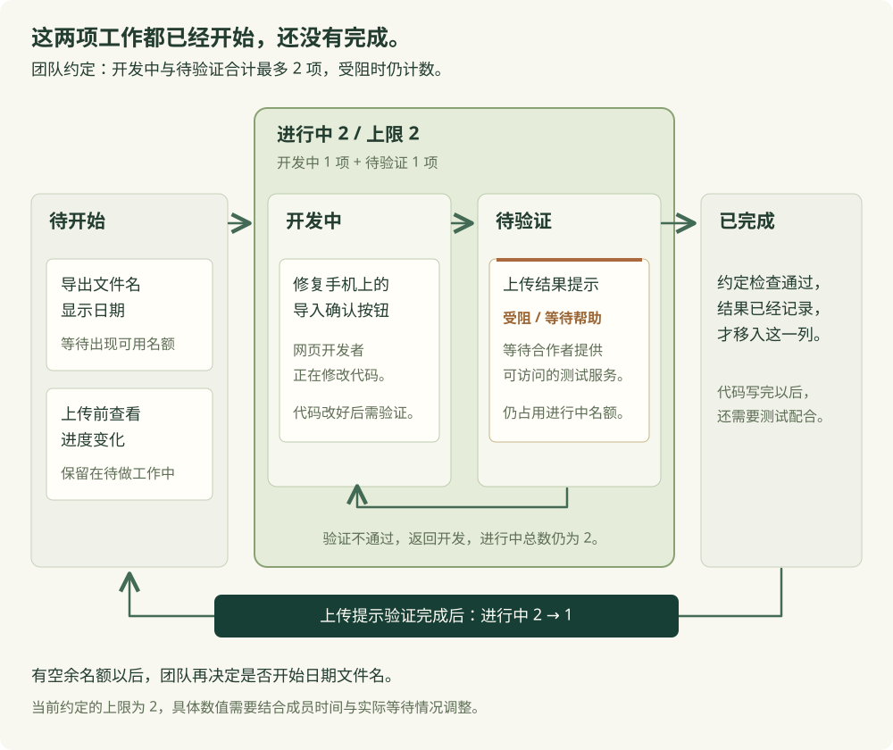

上一节中，我们用 Scrum 安排了复习清单的上传提示改进。使用者勾选复习内容以后，需要知道修改是否已经上传；服务端拒绝提交时，网页也需要保留本机进度并提示失败。我们负责网页，合作者负责服务端，双方需要共同验证这些行为。
假设我们已经写好了提示代码，准备在合作者提供的服务上测试，但测试服务暂时无法访问。这项改动就停在了等待验证的状态。等待期间，我们又开始修复手机上的导入确认按钮，因为在准备支持的手机尺寸下，按钮被页面底部遮住了。
这时，使用者还希望导出的文件名能够显示日期，方便区分每天留下的备份。我们如果继续修改文件名，就会同时留下几项尚未完成的工作。上传提示仍在等待联合测试，确认按钮则还需要我们在手机上运行验证。这些工作完成以前，使用者暂时用不到相应改动。
为了安排接下来的开发，我们需要知道每项工作停在哪里。例如，上传提示需要合作者提供能够访问的测试服务，确认按钮则还需要我们继续修改网页。知道具体缺少什么以后，双方才能商量怎样让已经开始的改动完成。
我们可以为每项改动建立一张卡片，把卡片放到表示当前状态的列中。这个记录工作状态的板面称为看板。卡片从开始到完成经过哪些状态，以及各状态怎样转换，需要由团队根据实际开发约定。《看板指南》将定义工作流程、管理其中的工作和改进流程作为共同进行的实践。
对于当前项目，我们可以采用“待开始、开发中、待验证、已完成”这四列。每张卡片记录一项准备提供给使用者的完整改动。例如，“上传结果提示”需要包含尚未上传、上传成功和提交被拒绝时的行为。负责网页与服务端的开发者可以分别编写相关代码，但这张卡片要在这些行为一起验证通过以后，才能进入已完成。
| 当前状态 | 团队怎样约定 | |
|---|---|---|
| 待开始 | 改动已经记录，但开发者尚未开始实现。开始以前需要确定具体行为，并确认相关成员能够投入时间。 | |
| 开发中 | 开发者已经开始编写或修改代码。需要修改的网页与服务端代码准备好以后，卡片可以移到待验证。 | |
| 待验证 | 相关开发者准备把代码配合起来运行，按约定步骤核对数据与页面结果。如果发现错误，就返回开发中继续修复。 | |
| 已完成 | 相关代码已经配合运行，约定的检查已经通过，并且保留了运行记录。使用者需要参与确认的行为，也应按事先约定完成试用。 | |
这些列名是当前团队的约定。如果网页和服务端需要单独审阅代码，我们可以增加待审阅的状态。增加以后，双方就能看见哪些改动正在等待另一位开发者阅读。每列需要说明实际停留的原因，团队才能据此安排后续工作。
我们把已经开始、尚未完成的工作称为进行中的工作，英文为 Work in Progress，简称 WIP，也常译为在制品。在当前约定中，开发中和待验证都计入 WIP。我们虽然已经写好了上传提示的网页代码，但联合测试尚未完成，因此这项改动仍然占用进行中的名额。
假设我们与合作者商量，暂时把进行中工作上限定为 2。上传提示的卡片在待验证，导入确认按钮的卡片在开发中，合计已经有 2 项。此时，日期文件名保留在待开始。我们可以与合作者完成上传提示的验证，或者继续修复并测试确认按钮，让进行中总数减少以后，再判断是否开始新改动。
这项上限会影响每天怎样选工作。如果我们把空闲时间继续用于编写日期文件名，上传提示仍可能一直等不到联合测试。按照上限安排时，我们可以将这段时间用于联系合作者，了解测试服务为什么无法访问，并商量何时可以一起测试。限制同时进行的数量，要求团队把时间用于处理已经开始的工作。

上传提示暂时无法测试时，我们可以在卡片上标记受阻，写明“等待服务端合作者提供可访问的测试服务”。卡片仍留在待验证，也仍计入进行中总数。这样，双方看到这张卡片，就知道接下来需要联系谁，以及还缺少什么。
受阻以后，我们需要继续处理导致等待的问题。例如，合作者可能需要提供正确的服务地址，或者修复启动失败的配置。测试服务能够访问以后，我们再按上一节的步骤运行正常上传和拒绝提交，核对页面文字与实际保存结果。
按照上一节确定的目标，我们还需要再次邀请使用者操作。使用者勾选“课堂笔记”但尚未上传时，应当知道手机会读到未完成；上传成功以后，应当知道手机会读到已完成。程序测试符合要求，实际试用也表明使用者理解了这两个状态，我们再保留相应记录，完成这项提示改动。
如果我们为了开始日期文件名，把受阻的上传提示移回待开始，板面上就会少算一项已经投入开发的工作。原来的代码还在等待测试，相关成员也还需要回来处理。为了保留这些事实，当前约定要求受阻卡片继续占用名额。团队决定取消某项工作时，则需要另外记录取消的原因，并说明已经写出的代码怎样处理。
等上传提示验证完成，我们将卡片移到已完成，进行中总数就从 2 降为 1。此时，团队有了开始另一项工作的余量，可以根据使用者当前的需要，决定是否开始日期文件名。成员在有能力继续处理时选择新工作，这种安排称为拉动。《面向 Scrum 团队的看板指南》也将工作数量的限制与拉动联系起来。
如果我们将导入确认按钮的卡片从开发中移到待验证，进行中总数则仍为 2，因为这项改动还需要测试。测试发现确认按钮仍被遮住时，我们将卡片返回开发中继续修改，总数也保持不变。开发者确认改动满足完成条件，并将卡片移到已完成以后，才会释放当前名额。
上限定为 2，是我们根据当前两位开发者的时间提出的初始安排。团队需要根据实际等待情况继续调整。例如，上传提示长期等待同一位合作者测试，我们就需要讨论怎样提前准备测试环境，或者共同安排联合测试时间。单纯增加上限，可能会让更多改动排到这位合作者面前。
如果团队准备尝试上限 3，就应该记录为什么改变，以及后续准备观察什么。我们可以查看新增工作是否挤占了联合测试时间，已经开始的卡片是否等得更久，再与原来上限为 2 时的情况比较。比较时还需要考虑任务难度和成员可投入时间的变化，才能判断这项调整是否有帮助。
我们负责组织复习清单开发时，需要与合作者商量联合测试的时间，并为需要使用服务的成员提供地址与运行说明。如果某位成员暂时无法继续开发，我们需要了解具体缺少什么条件，再与相关成员商量由谁协助。看板上的受阻记录，可以让大家知道这项工作正在等什么。
看板还需要与实际代码保持一致。我们可以把卡片链接到相关提交、合并请求与测试记录。卡片写着“上传结果提示已完成”，相关成员就应能根据记录运行对应版本，看到待上传、成功和拒绝时的正确行为。
使用编程助手时，生成速度可能让我们很快得到几项改动的代码。随后仍需要有人审阅它们，并验证与已有功能的配合。如果审阅与测试跟不上，我们可以按照同样的上限安排工作，完成当前改动以后再让助手继续处理后续卡片。是否已经完成，需要依据当前卡片的完成条件判断。
为了了解每项工作从开始到完成经过了多久，我们还要记录开始与完成的时间。对于上传提示，开始时间可以约定为开发者开始实现这项改动的时刻；完成时间则是整项改动满足约定完成条件，并且已经保留相应记录的时刻。中间等待测试服务的时间也包含在内。例如，从周一上午 9 点开始，到周三上午 9 点完成，经过了 48 小时。
看板的工作流指标包括以下几项。记录时，团队需要采用相同的开始点与完成点，才能比较各项工作的情况。
| 记录什么 | 在当前项目中怎样使用 | |
|---|---|---|
| 进行中数量 / WIP | 此刻已经开始、尚未完成的工作有几项。当前上传提示与确认按钮合计为 2。 | |
| 未完成工作从开始到现在的历时 / Work Item Age | 对于还没有完成的卡片，从开始到现在经过了多久。上传提示仍在等测试服务时，这个时长会继续增加。 | |
| 从开始到完成的历时 / Cycle Time | 工作完成以后，根据实际开始与完成时间计算。它包含编写代码、测试和中间等待的时间。 | |
| 一段时间内的完成数量 / Throughput | 例如，团队在一周内按同样完成条件交付了几项改动。卡片需要保持相近的记录范围，才能据此比较后续情况。 | |
积累记录以后，团队还可以提出完成时间的预期，通常称为服务水平预期，简称 SLE。它需要说明一个时间范围，以及在这个时间内完成的可能性。假设过去 20 项同类改动中，有 17 项在开始后的 5 天内完成，我们可以据此提出“约 85% 的同类改动在开始后 5 天内完成”的预期。
这份预期描述的是同类工作以往的完成情况。对于当前的上传提示，我们还需要查看测试服务是否已经可用，才能进一步讨论具体交付时间。缺少历史记录时，团队可以商量初始估计，并明确记录估计依据，等积累实际数据以后继续调整。
这些记录也可以帮助团队改进工作安排。如果几项改动都长期停在待验证，我们就需要了解测试为什么没有进行。例如，服务环境只有合作者能够启动，就可以讨论怎样让网页开发者按说明启动对应环境，并安排双方验证启动步骤。后续再观察卡片等待测试的时间是否减少，判断这项改进的效果。
上一节介绍的 Scrum 与这些做法可以结合使用。团队仍然围绕 Sprint 目标选择工作，也可以在周期内通过看板查看哪些改动尚未验证。每日 Scrum 时，开发者就能围绕受阻卡片讨论怎样推进当前目标。Scrum.org 的看板指南明确讨论了这种结合，Scrum 原有的职责和活动仍然适用。
对于持续到来的维护任务，团队也可以按照已经约定的工作步骤接收任务，并在有余量时开始处理。紧急故障需要提前约定怎样响应。例如，收到可能造成进度丢失的报告时，需要明确由谁排查，原来的哪项工作暂缓，以及为什么调整当前上限。受影响的卡片仍然要保留实际状态，方便团队随后继续处理。
看板方法能够帮助团队发现等待，并根据实际情况改进安排。需求尚不明确时，我们仍然需要与使用者讨论，必要时制作原型。服务端保存可能丢失进度时，开发者也仍然需要设计并运行对应测试。团队把这些工作放进卡片以后，还需要为它们约定能够判断结果的完成条件。
你可以打开开发工作看板，也可以下载看板项目与工作记录模板。页面在内存中保存卡片与操作记录，刷新后恢复案例起点。按钮用于移动卡片，业务项目中的代码修改与测试需要另外执行。
打开以后，上传提示在待验证并标记受阻，导入确认按钮在开发中，进行中总数为 2。你可以尝试开始日期文件名，页面应保留卡片位置，并说明已经达到上限。将确认按钮移到待验证以后，总数应仍然为 2。
接着，在当前推演中解除上传提示的阻碍，查看并确认本项完成条件，再将它移到已完成。进行中总数应降为 1。此时重新开始日期文件名，卡片就可以进入开发中。对于实际项目，解除阻碍需要依据测试服务已经可用的结果，完成条件也需要逐条运行验证。
你可以在 workflow.md 中记录准备采用的状态与规则。如果有自己的开发项目，就以实际工作为依据建立卡片。每张卡片都需要说明准备实现什么，以及完成以前要运行哪些操作。
阅读当前项目与团队实际记录，在 workflow.md 中说明采用哪些工作状态。
写明卡片记录的是哪项完整改动，相关开发者分别需要提供什么。
为每项工作写出开始条件，以及移入已完成以前需要满足的条件。
上传提示需要一起说明待上传、上传成功与提交被拒绝时的行为。
再次邀请使用者在上传前后判断手机会读到什么，并记录实际回答。
依据团队能够投入的时间，提出进行中工作上限，并说明理由。
开发中、待验证和已经受阻的工作都要按约定计数。
待讨论的要求保留为待讨论，实际测试结果只采用我提供的记录。
当前整理工作约定，保持业务程序原状。你可以把页面中的操作结果填写到 run-notes.md。你需要分别核对达到上限时能否开始新卡片、待验证是否继续计数，以及受阻时原卡片有没有保留。页面中的点击记录反映了卡片操作，实际开发历时则需要记录在 flow-record.csv 中。
运行开发工作看板，使用案例起点与上限 2，填写 run-notes.md。
先尝试开始日期文件名，记录卡片是否移动，以及页面给出的原因。
将导入确认按钮移到待验证，再记录进行中总数。
在当前推演中解除上传提示的阻碍，核对本项完成条件，
确认以后将它移到已完成，再尝试开始日期文件名。
分别记录每一步的预期与实际结果。
另外尝试把卡片标记受阻，观察它是否继续计入进行中工作。
页面的操作结果与实际项目中的开发、测试结果分开保存。你与合作者在真实项目中使用这些约定以后，可以根据实际开始时间、完成时间和等待原因，整理 review.md。如果发现联合测试经常无人安排，就需要讨论具体由谁预约、使用什么环境，并在后续开发中观察修改后的做法是否减少等待。
依据真实项目中的 flow-record.csv 和实际协作记录，填写 review.md。
找出已经开始却等待较久的工作，说明它具体在等谁提供什么。
提出准备怎样处理这项等待，以及需要哪些成员共同参与。
如果建议改变工作上限，写明依据，并安排后续观察。
根据实际开始与完成时间整理历时，说明统计采用什么时间单位。
完成数量按同一范围的工作项统计，避免把函数数量或生成代码行数混入。
缺少历史记录时，将时间预期标为初始估计或待讨论。
当前页面推演中的点击间隔只用于记录页面操作。
涉及交付日期的判断，需要依据实际项目进度与尚未解决的问题。